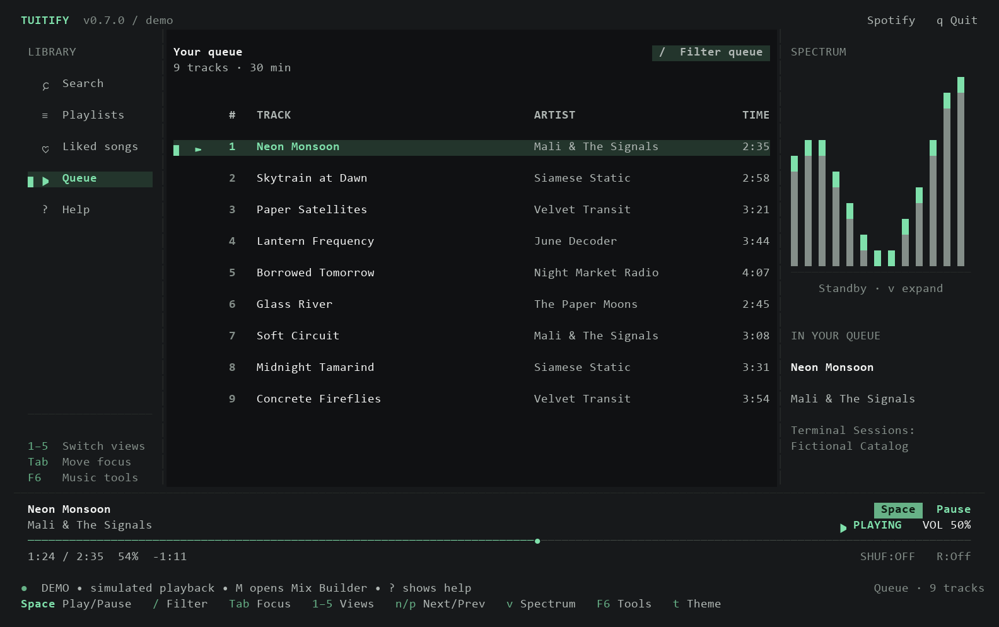

Keep discoveringOne song.
↗One song.
More to discover.
Deezer-powered Track Radio finds related artists and songs, then keeps your queue moving.
Discover with Deezer and listen through Volta, Spotify Premium, or free YouTube Music. A focused player for Windows Terminal.

Everything you need to get lost in the music, without getting lost in another app.
A complete listening experience, thoughtfully reduced to the things that matter.
Deezer-powered Track Radio finds related artists and songs, then keeps your queue moving.
LRCLIB lyrics follow your song, line by line.
From focused monochrome to a little more atmosphere.
Filter, reorder, and undo. Your queue and position return with playback paused when you relaunch.

Written in Rust. Native Windows audio. One executable with no Electron shell and no desktop client standing in the way.
Download the ZIP, extract it, and run scripts/install.ps1 in PowerShell. Then open a new terminal and run tuitify. Or launch the standalone tuitify.exe directly.
Windows x64 · v0.7.0 · Free & open sourcetuitifyAfter installation on PATH, run tuitify.
Free music opens automatically. Press F6 to connect accounts.
The download is v0.7.0. Source builds add Monochrome before Volta, Spotify, and YouTube, more lyric sources, and audio quality fixes. These changes are unreleased.
Read what’s nextOnly for Spotify audio. Connect Volta for matched lossless audio, or use free YouTube Music. The native demo needs no account or audio device. YouTube playback needs yt-dlp, FFmpeg, and Deno; the music catalog adapter needs Python 3.10+. Tuitify prepares missing playback tools automatically.
No. Tuitify streams and plays audio directly, with Windows media key support.
Your preferences, queues, and listening totals stay on your PC. There’s no analytics collection. Discord presence is enabled by default and can share song details with your local Discord client.